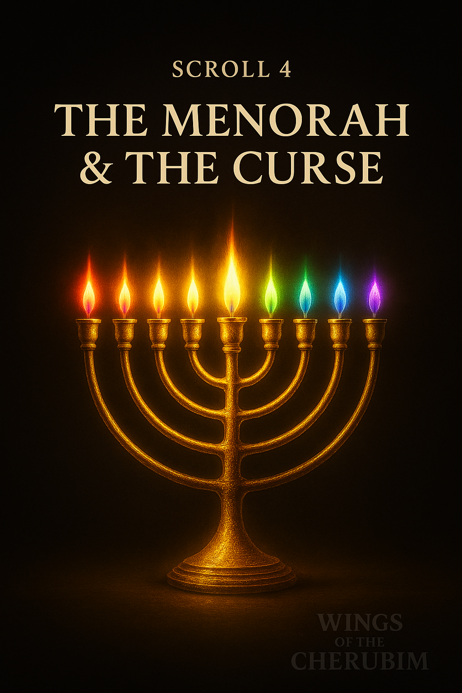
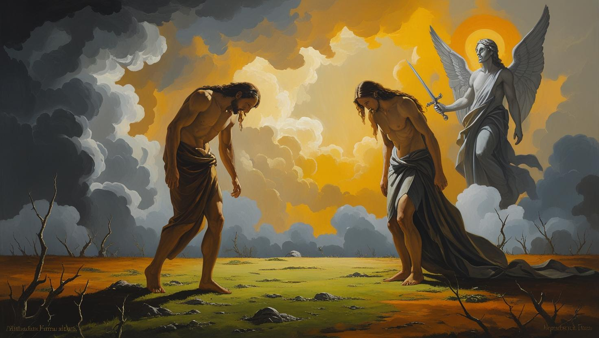
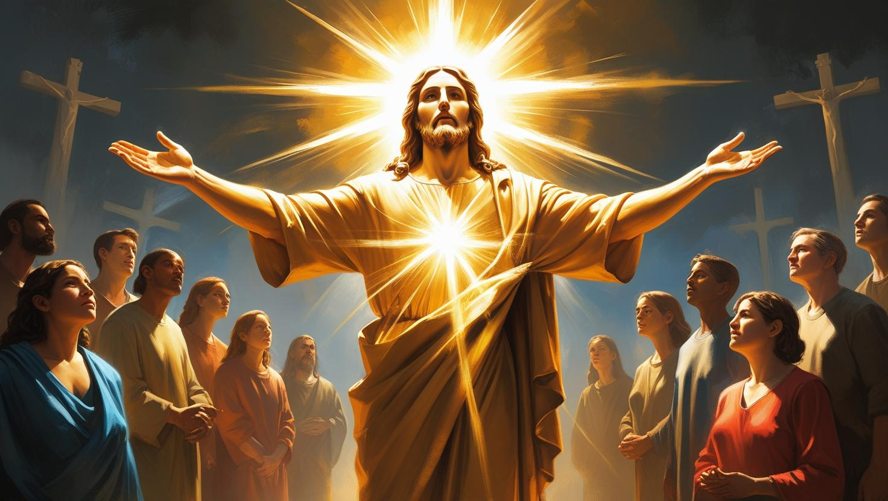

📜 The Menorah & the Curse
From Light to Curse — and Redemption
✨ The Menorah: Blueprint of Divine Light
The Menorah is more than a lamp — it is God's encoded diagram of His own triune nature and the fullness of His Spirit (Isaiah 11:2). The seven flames represent the Seven Spirits of God, burning continually before His throne (Revelation 4:5).
- Central shaft: The Eternal Father
- Three branches on each side: The Son and the Holy Spirit
- Seven lights: Wisdom, Understanding, Counsel, Might, Knowledge, Fear of the Lord, Spirit of the Lord
🌍 From Eden to the Curse
In Genesis, God said “Let there be light” — a spiritual light, not the sun. This light was Christ Himself (John 1:4-5). But through Adam's fall, sin entered, and the light was veiled. The result: a curse of toil, pain, and death. Yet the Menorah remained a witness — the flame of hope that the Light would return.
🕯️ Christ: Light of the World
Jesus declared, “I am the Light of the world.” He is the fulfillment of the Menorah — the branch, the flame, and the oil. At the cross, He bore the curse, removing the barrier between man and God. Through Him, the original Light is restored — not to a temple, but to the hearts of believers.
🔥 The Sevenfold Flame in You
In Christ, the Seven Spirits now operate within the believer — forming a complete spiritual lampstand (Revelation 1:20). Faith, obedience, and surrender ignite the full flame. This is how we overcome darkness: by bearing His light into the world.